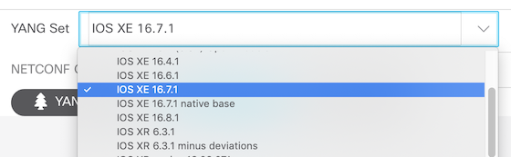
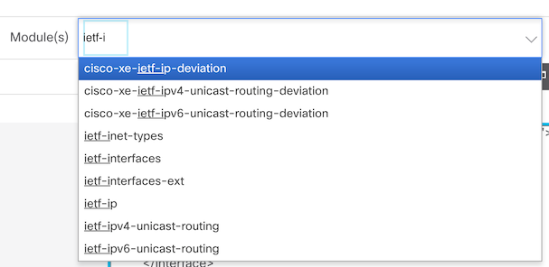
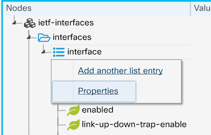
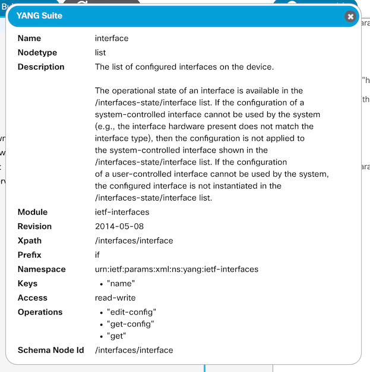
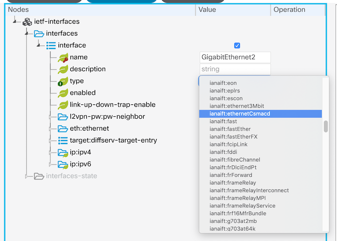
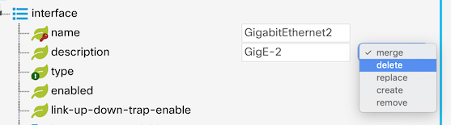
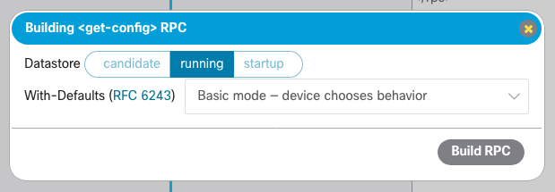
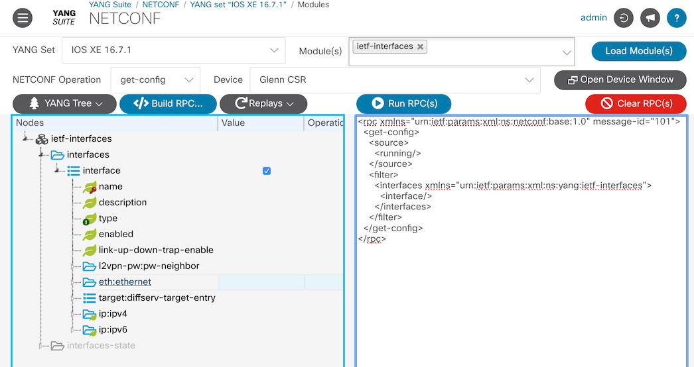
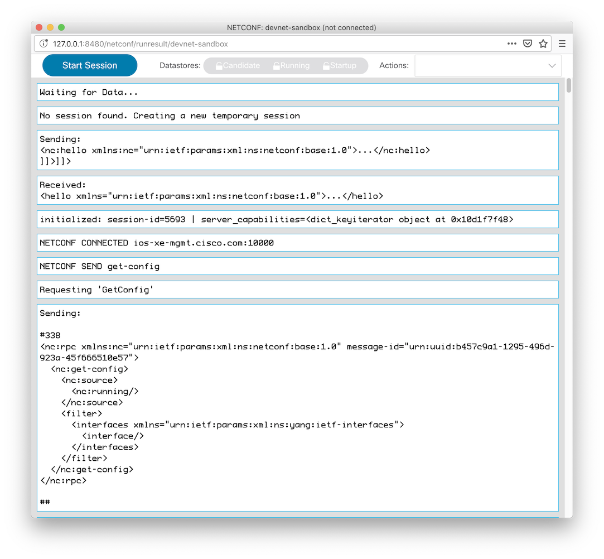

Using NETCONF RPCs¶
After creating a YANG set to work with and exploring the contents, it is now time to try creating NETCONF messages. From the sidebar on any YANG Suite page, select “Protocols → NETCONF” and choose the YANG set you have created.
After selecting the YANG set, select the “Module(s)” area, start typing in the name or a portion of the name of the YANG file you wish to work from, and pick one or more module(s). Keep in mind, if the module you pick is just a supporting module for other modules, there will probably be nothing to explore, but we keep all the files on the list for completeness, and some support modules do have explorable leaves.
I’ll go ahead and choose “ietf-interfaces” and click on the “Load module(s)” button. After that, I expand the tree by clicking on the small triangle next to “ietf-interfaces”, then “interfaces”. Note that “interface”, as the only child of “interfaces”, automatically expands as well. I then right click on “interface” and a context menu appears.
Let’s look at the properties. We can see this is a “list” nodetype and it is capable of edit-config, get-config, and get operations. If you want to learn more about the different nodetypes, open the module in “Operations → Explore YANG”.
Let’s look at an entry in the “interface” list. As you can see, a list entry can contain many parameters.
Click in the Value column next to the leaf you want to set and you will get a hint of what to enter or, in the case of an enum, boolean, or identityref, you may get a pulldown menu of specific choices. In the example below, “name” is a string (I typed in “GigabitEthernet2”), “description” is a string, and “type” is an identityref pulldown menu.
Each icon and badge to the left of the name has a significant meaning. For example, “name” is a leaf (leaf icon) that is the key to the list (key badge), and “type” is a leaf that is mandatory (exclamation point badge). The “Properties” dialog from the context menu can help explain differing icons, which could be important to the forming of the netconf message.
You may be wondering what the “Operation” column is about. When the “edit-config” protocol operation is selected, you can perform config operations on specific leaves. By default, config operations are set to “merge” so you will probably not have to set this, however, if you want to delete a value in the config, you need to set “delete” in the proper location.
In this example, I want to delete the description of a particular interface, which I accomplish by specifying the list key (“name” leaf), then setting the “delete” operation next to the “description” leaf.
Let’s try a “get-config”, so click on the “Clear Values” button for a fresh start (there is also a context menu for the “Values” and “Operations” columns to clear individual entries).
I will choose to get the entire interface list because it is so hard to remember the correct “type” value out of the dozens offered.
Make sure that the device is selected (from the “Device” dropdown). For this example, I have selected my CSR1K device. Now click on the “Build RPC” button and a dialog will appear prompting for any additional information needed – here, the datastore to query. I will choose the “running” datastore, corresponding to the running-config. The datastores available to choose will depend on the device, and the contents of this dialog (if any) will depend on the NETCONF operation you have selected.
Now click on the “Build RPC” button and the RPC will appear in the text window below along with the module name and revision.
Now click on “Run RPC”. A dialog window will appear with the results. The configuration of the device’s interfaces should be displayed if everything worked.
The get-config is always good to start with because it will give you an idea
of what the NETCONF server on the device is expecting
(such as an interface type of ianaift:ethernetCsmacd for your interfaces).
Now go ahead and start making changes!